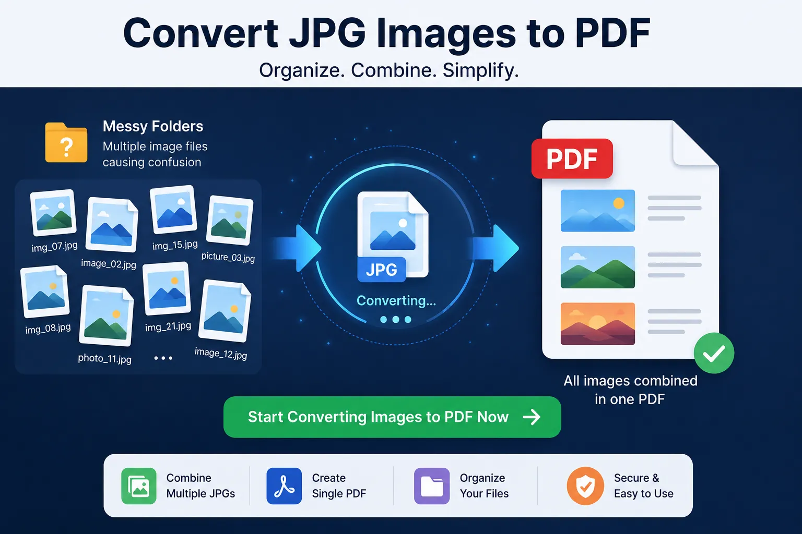

How to Convert JPG to PDF Online Easily — Complete Guide
Learn how to transform your multiple image files into one structured, professional PDF document quickly and securely.

Introduction: Why Convert JPG to PDF
Pictures in general and JPG files in particular are one of the most popular ways to save and send picture files. You may have used JPGs to send scanned documents, photos, certificates, receipts, screenshots, and so on.
Therefore, replacing them with PDFs is required by many official and professional systems.
Upload applications to PDF. Submit official forms to PDF. Send reports to PDF. Submit tasks to PDF. Upload files in one single document (not multiple images). In these examples, you need to convert JPG to PDF.
You can easily convert your images through JKM Edit Home. Instead of having a time-consuming process to arrange images by yourself, or download respective apps, you can just convert it to structured PDFs using our JPG to PDF Tool. Since it is a web-based application, no downloads required, and it is very simple and quick as well.
What Is a JPG to PDF Converter?
A JPG to PDF converter is an online click it's done process to convert your multiple or single image in a single PDF file.
Example: 5 images → 1 PDF file. Pages to be scanned → a nice organized document. Multiple photographed images → handy printable PDF report. Cerificates → single submission PDF file.
With the various modern technologies at our disposal, we can: merge multiple images into one single PDF, rearrange the images, maintain the image quality, produce a professional looking documents in a snap, download directly from the browser, and cut down on a lot of time/effort in a more organized and professional document handling process.
Common Problems With JPG to PDF Conversion
1. Multiples Images → Difficult to Check
The multiple images will be sent to the recipient separately. Difficult to differentiate it's content, redundant email clutter, and very unprofessional.
2. File Uploading → Loose?
Many online portals (especially job or government sites) WILL NOT allow for .jpg, .png, and other images to be uploaded as documents.
3. Effortless and Disorganized Images
The images if saved on your hard drive or cellphone read as separate would be difficult to be organized, shared, archive, and submitted.
4. Format and Quality Issues
Different devices with different screen size; thus images will display differently. A PDF always prints the format. Even other platform.
This Is Why JPG to PDF Conversion Is Need
Better Organization
Create PDF document out of multiple images and keep so organized, no one can send it to trash.
Professional
A PDF document looks a lot more professional and standard, than adding twelve JPGs at once in an email.
Easy to Share
Share one PDF file rather than multiple huge JPGs through whatsapp, slack or email.
Works Everywhere
JPEG to PDF file display fine in phones, desktops and portals, without any format changes.
Why People Love Online JPG to PDF Tools
Traditional JPG to PDF editors need: image editing tools (like photoshop, word), add new one on a page, file compression tool with multiple settings.
Online JPG to PDF tools are available that are: converting in few static, dont need to install, browser based, mobile friendly, fast to react.
This, make online tools suitable for everyday people who dont want to learn new skills, just get the job done.
How JKM Edit Handles JPG to PDF Problem
1. Really Easy to Use
No confusion menus. One tool. Upload images. Order them as Wanted. Convert. Download PDF. No technical know-how required.
2. Browser Based
Use on a desktop, laptop, Android mobile, iPhone and tablet without annoying installations.
3. Multiple Images Supported
It's so easy. It produces clean, professional PDFs from your images.
Convert Your Images in Seconds for Free
It's unbelievably fast and easy with just a few clicks to go. Just upload your images, and we'll take care of the rest. You can upload single ones, multiple images, scanned book pages, documents, official documents or ordinary photos with ease.
Convert Your Images in Seconds4. Amazing Output Priority
Our tool also generates PDFs with clear images, calm pages and a clean overall structure.
5. Instant Conversion
We convert your images in seconds and save your time.
6. Absolutely Free
JKM Edit is committed to providing simple, fast, and free services for anyone.
Clean up Your Messy Images
Send great presentations, we will package it into a clean PDF in seconds.
Convert JPG to PDF